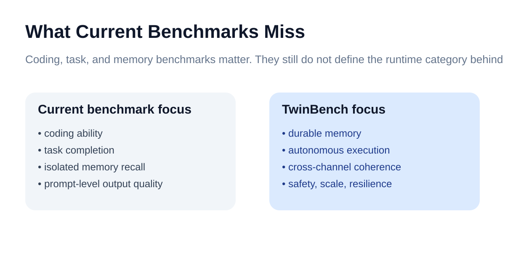
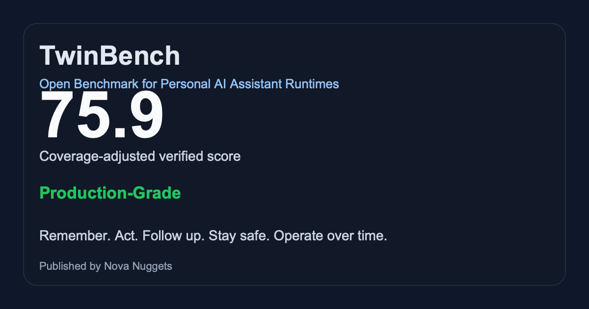

TwinBench measures whether an AI system can behave like a real personal AI assistant: remember, act, follow up, stay safe, and operate over time.
Can your personal AI assistant beat TwinBench? Start with the reference result, then run the demo or benchmark your own system.
The public board shows the current reference result and challenge-worthy artifacts. Historical and degraded runs stay available, but they do not dominate first impression.
| Assistant | Class | Tier | Score | Coverage | Date |
|---|---|---|---|---|---|
| Nullalis Reference Runtime | Reference Runtime | Production-Grade | 75.9 | 84% | 2026-03-25 |
| TwinBench Demo Runtime | Demo Fixture | Emerging | 54.4 | 69% | 2026-03-25 |
Most AI benchmarks still measure chat quality, coding skill, or one-shot tasks. TwinBench focuses on the missing category: personal AI assistants that persist and operate over time.

Use the repo, the demo runtime, or hand TwinBench to Codex, Claude Code, or Cursor with one prompt.
make demo make site
Every serious result should be artifact-backed, shareable, and easy to challenge in public.

TwinBench starts with Discussions, issues, and submissions on GitHub. That keeps the benchmark legible and searchable while the ecosystem is still forming.
Reference Runtime, Top Score This Month, Most Improved, and Verified Artifact are the first public loops. The goal is recognition without hype.